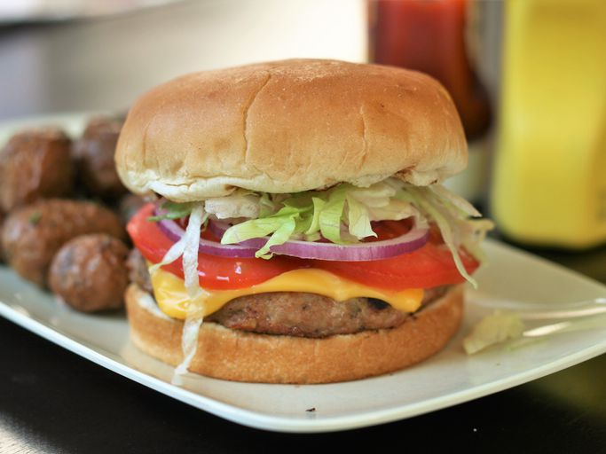

Seasoned Turkey Burgers

Description
An easy turkey burger seasoning makes for tasty turkey burgers! Cook on the barbecue or indoors.
Ingredients
- 1 ½ pounds ground turkey
- 1 large egg, lightly beaten (Optional)
- 1 (1 ounce) package dry onion soup mix
- ½ tablespoons soy sauce
- ½ teaspoon ground black pepper
- ½ teaspoon garlic powder
- 6 hamburger buns, split
Steps
- Mix turkey, egg, onion soup mix, soy sauce, pepper, and garlic powder in a large bowl until well combined; refrigerate mixture for about 10 minutes, then form into 6 equal-sized patties.
- Preheat an outdoor grill for medium-high heat and lightly oil the grate.
- Cook turkey burgers on the preheated grill, turning once, until no longer pink in the center and the juices run clear, about 20 minutes. An instant-read thermometer inserted into the center should read at least 165 degrees F (74 degrees C). Serve on buns.
Home Page